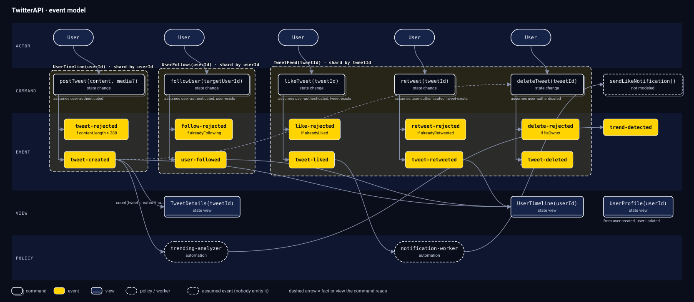

Design systems the way they happen.
eventline describes any system as commands, events, and views. Fire a few and watch the timeline fill.
Run itTry it. Sample data, running in your browser.
user -> postTweet(content, media?) in UserTimeline(userId)on [user-authenticated(userId)] --[content.length > 280]--> [tweet-rejected] --[default]--> [ tweet-created { userId, content, media, createdAt: clock.wall() } ]user -> likeTweet(tweetId) in TweetFeed(tweetId)on [user-authenticated(userId), tweet-exists(tweetId)] --[alreadyLiked]--> [like-rejected] --[default]--> [ tweet-liked { userId, tweetId, likedAt: clock.wall() } ]user -> followUser(targetUserId) in UserFollows(userId)on [user-authenticated(userId), user-exists(targetUserId)] --[alreadyFollowing]--> [follow-rejected] --[default]--> [ user-followed { userId, targetUserId, followedAt: clock.wall() } ]Pick a command. The guard on each line decides which events it emits.
- UserTimeline
- 0 tweets
- Likes
- 0
- Follows
- 0
Boxes show where. Events show what happened.
Draw a rate limiter as services and it looks like nothing else you have drawn. Write it as events and it looks like every other system.
Drawn as boxes
- Client
- API gateway
- Rate limiter
- Redis
Written as events
- user-authenticated
{ userId } - request-logged
{ userId, resourceId } - rate-limit-reached
{ userId, retryAfter: 60s } - UserQuota(userId)A view folded from the events above.
Four slices, one timeline.
eventline maps one to one onto the four slice patterns of Event Modeling. Nobody drew this board. eventline-axi diagram eventmodel derived it from the 75 lines you are about to read.

A whole API in 75 lines.
Every system is a series of events.
Commands decide. Events remember. Views answer.
- UserTimeline(u1)
- empty
- TweetDetails(t1)
- not created
- UserProfile(u2)
- 0 followers
Scroll to read the model. Each command runs as you reach it.
Questions, answered plainly.
Is eventline something I run in production?
No. It is a notation for describing a system, plus a CLI that reads your model files and reports on them. The demos on this page run a small stand-in for a real system, in your browser, so you can see what a model means.
Do I need to know Event Modeling first?
No. If you do, the mapping is direct: state change, state view, automation, and translation slices each have a line shape in eventline. If you do not, start with a command, the events it can produce, and a view that reads them.
How is this related to event storming?
Event storming is a workshop for finding out what happens in a domain. Event Modeling continues from there and turns the events into a design you can build from. eventline writes that design as text, so it can be reviewed and checked. Read how the three fit together.
What is a Dynamic Consistency Boundary?
It scopes a decision by a key, such as userId, instead of by an aggregate. A command reads only the events inside its boundary, so two users never contend for the same lock.
Can I use it in a system design interview?
That is what it was written for. Introduce it as a quick event model: write the commands, events, boundaries, and views before you draw infrastructure boxes. Interviewers get a precise picture of state changes, invariants, and concurrency in a few lines.
Do I need Kafka or event sourcing infrastructure?
No. eventline describes behavior, not infrastructure. Views name their cache or partition key as annotations, and you decide what stores the events.
What does the eventline-axi CLI do?
It parses a .dsl file and lists its actors, commands, events, views, boundaries, and policies. It traces dependencies, validates a model against the checklist, and exports the dependency graph as toon, JSON, or plain text.
Run it on a real model.
Download the example from this page, point the CLI at it, and get the whole model back.
Download twitter-pure.dsl first, then run the command in the same folder. Swap in diagrams as the first argument to draw the model instead.
counts[6]:
actors: 3
commands: 5
events: 16
views: 3
boundaries: 3
policies: 2
system:
name: TwitterAPI